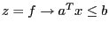
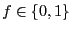
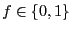
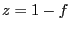
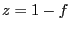
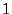
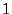

Next: GRBModel::addQConstr() Up: GRBModel::addGenConstrXxx() Previous: GRBModel::addGenConstrOr()
Add a new general constraint of type GRB_GENCONSTR_INDICATOR to a model.
An INDICATOR constraint
 states that if the binary
indicator variable  is equal to , then the linear constraint
is equal to , then the linear constraint
 should hold.
On the other hand, if , the linear constraint may be violated.
The sense of the linear constraint can also be specified to be or
should hold.
On the other hand, if , the linear constraint may be violated.
The sense of the linear constraint can also be specified to be or  .
.
Note that the indicator variable  of a constraint will be forced
to be binary; independently of how it was created.
of a constraint will be forced
to be binary; independently of how it was created.
Multiple signatures are available.
| GRBGenConstr | addGenConstrIndicator ( | GRBVar | binvar, |
| int | binval, | ||
| const GRBLinExpr& | expr, | ||
| char | sense, | ||
| double | rhs, | ||
| string | name="" ) |
binvar: The binary indicator variable.
binval: The value for the binary indicator variable that would force the linear constraint to be satisfied ( or ).
or ).
expr: Left-hand side expression for the linear constraint triggered by the indicator.
sense: Sense for the linear constraint. Options are GRB_LESS_EQUAL, GRB_EQUAL, or GRB_GREATER_EQUAL.
rhs: Right-hand-side value for the linear constraint.
name (optional): Name for the new general constraint.
Return value:
New general constraint.
| GRBGenConstr | addGenConstrIndicator ( | GRBVar | binvar, |
| int | binval, | ||
| const GRBTempConstr& | constr, | ||
| string | name="" ) |
binvar: The binary indicator variable.
binval: The value for the binary indicator variable that would force the linear constraint to be satisfied ( or ).
or ).
constr: Temporary constraint object defining the linear constraint that is triggered by the indicator. The temporary constraint object is created using an overloaded comparison operator. See GRBTempConstr for more information.
name (optional): Name for the new general constraint.
Return value:
New general constraint.